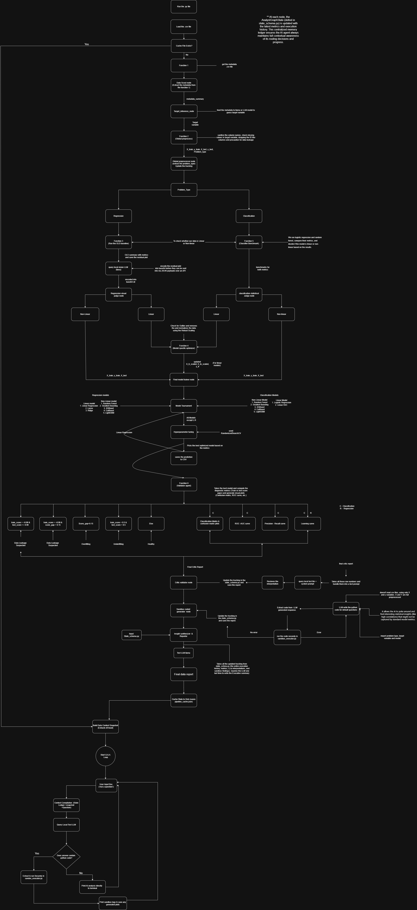
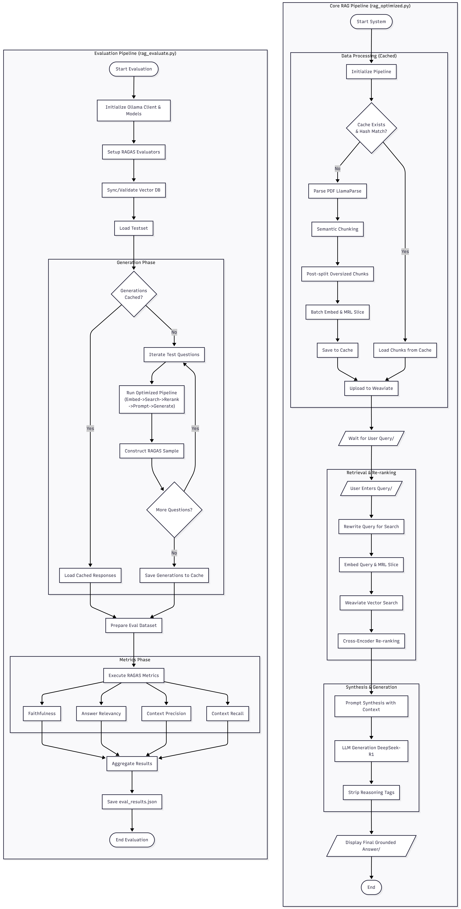
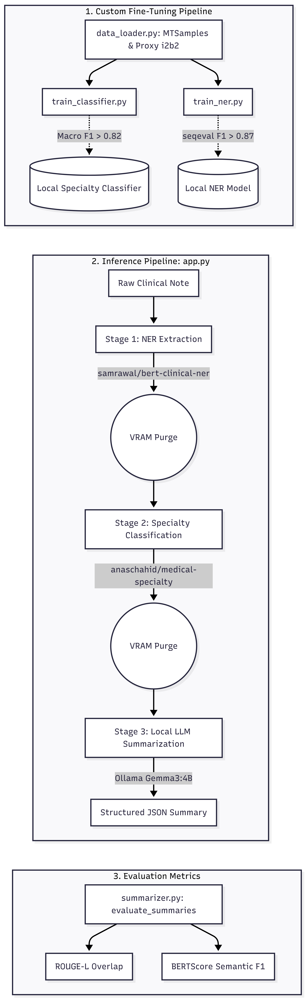

Multi-agent ML orchestration system that autonomously ingests raw datasets, preprocesses them safely, and runs a model tournament to select the best algorithm. Integrated LLaVA and Llama 3 for intelligent architectural selection.
Retrieval-Augmented Generation pipeline for long, complex research PDFs. Combines LlamaParse document parsing, Semantic Chunking, hybrid search, and DeepSeek-R1 reasoning for grounded, source-cited responses.
Fine-tuned Llama-3-8B into a specialized data science code assistant using QLoRA. Built a robust data curation pipeline and memory-efficient training setup to improve SQL and Pandas code generation.
End-to-end clinical decision support pipeline over MTSamples medical transcriptions. Integrated domain-specific BERT architectures for NER and Gemma3-4B to logically infer comprehensive medical treatments.
ADA (Agentic Data Analysis) is a fully local, autonomous AI data scientist. You hand it a raw CSV file, and it independently profiles the data, infers the prediction target, cleans and encodes the features, decides which family of machine learning models fits the data's geometry, runs a hyperparameter-tuned model tournament, audits its own winner for overfitting and data leakage, writes its own exploratory analysis code, and compiles a professional executive summary report — all without a single API call leaving your machine.
Every "thinking" step is powered by small open-source LLMs running locally through Ollama: Llama 3 for text reasoning and LLaVA for visual judgment. Every "doing" step is powered by deterministic Python tooling (pandas, scikit-learn, statsmodels, XGBoost, CatBoost, LightGBM).
The architecture follows one core rule: let the LLM decide, let deterministic code execute.
The architecture flowchart traces the full journey of a CSV through the system:
Extracts a compact JSON metadata summary of the CSV — shape, dtypes, missing values, cardinality, sample values. This keeps a 100MB dataset down to a few KB of context so a local 8B-parameter LLM can reason about it without exhausting VRAM.
Llama 3 reads the metadata summary and infers which column is the machine learning target — no human labeling required.
A deterministic cleanup pipeline that splits train/test first (to prevent leakage), then:
A deterministic switch: regression goes one way, classification goes the other.
Fits a baseline OLS model with statsmodels and saves a residual plot. Then LLaVA, a vision LLM, literally looks at the plot — if it sees a random cloud, the data is linear; if it sees curvature or a heteroscedasticity funnel, it routes to tree-based models.
Benchmarks Logistic Regression vs. Random Forest with cross-validated Macro F1 (imbalance-safe). Llama 3 reads the F1 delta and rules whether the decision boundary is linear or non-linear.
If a LINEAR model family was chosen, the data gets "surgery": IQR outlier removal and RobustScaler scaling (fitted on train only). Tree models skip this entirely — they're scale- and outlier-invariant.
The chosen family competes in a hyperparameter-tuned tournament via RandomizedSearchCV:
The winner is selected on R² (regression) or Macro F1 (classification), and predictions are exported to CSV.
The system audits its own work. It computes train-vs-test score gaps and flags
OVERFITTING_DETECTED, UNDERFITTING_DETECTED, or
DATA_LEAKAGE_SUSPECTED. It generates a full diagnostic plot suite — confusion matrix,
ROC-AUC curves, precision-recall curves, learning curves — then Llama 3 writes a natural-language
health verdict.
Llama 3 writes its own exploratory Python analysis script, which runs in an isolated sandbox namespace. If the code crashes, the full traceback is fed back to the LLM, which fixes its own bug — up to 3 attempts.
All state artifacts — routing decisions, metrics, critic flags, execution history — are compiled by
Llama 3 into a polished Markdown executive summary report saved to reports/.
After the pipeline completes, you can chat with your data. The agent answers questions grounded in the actual pipeline ledger and a data snapshot. If you ask for a plot or computation, it writes and executes the code live in the sandbox, with the same self-correction loop.
A single Pydantic model (AnalystGraphState) is the system's central nervous system.
Every node reads from it and writes typed updates back, producing a full execution audit trail.
Completed pipelines are cached to disk (keyed by dataset hash) so re-runs can fast-forward straight
to the Q&A workspace.
| Dataset | Task | Winning Model | Test Score | Health Verdict |
|---|---|---|---|---|
| Telco Customer Churn | Classification | CatBoost | 0.797 accuracy | HEALTHY (gap 0.037) |
| Titanic | Classification | Tree family | 0.835 accuracy | HEALTHY |
| File | Role |
|---|---|
graph_backbone.py |
Orchestrator: all graph nodes, routing, main pipeline loop, Q&A workspace |
engine_room.py |
Deterministic tools: metadata extractor, preprocessor, OLS baseline, optimizer, benchmarker, critic engine |
state_schema.py |
Pydantic central graph state |
sandbox_executor.py |
Isolated execution environment for AI-generated code |
reports/ |
Generated executive reports, prediction CSVs, AI-written scripts, pipeline caches |
plots/ |
Residual plots and diagnostic visuals |
This project is an advanced, locally-hosted Retrieval-Augmented Generation (RAG) system designed to accurately parse, retrieve, and synthesize information from complex documents (such as survey papers and textbooks). It emphasizes performance optimization, cost reduction by using local models, and rigorous automated evaluation.
The primary goal of this system is to provide highly accurate, fact-based answers grounded strictly in the provided documents. By implementing advanced retrieval techniques (like query rewriting and cross-encoder re-ranking) and utilizing a robust evaluation framework, the system aims to minimize hallucinations and deliver precise citations (e.g., page numbers) for every fact it generates.
The project leverages a modern, hybrid stack combining local inference with specialized cloud parsing:
api.py) and a frontend web
application.rag_optimized.py)This is the production pipeline responsible for handling user queries. It is highly optimized for speed and context window management.
SemanticChunker (to keep context boundaries intact), followed by a
recursive character text splitter for oversized chunks. It embeds the chunks in batches using
Nomic, slices the vectors using MRL, normalizes them, and caches the processed data locally.
This avoids redundant API calls and parsing times on subsequent runs.rag_evaluate.py)To ensure the pipeline is accurate and reliable, the project includes an automated evaluation script built on RAGAS (Retrieval Augmented Generation Assessment).
eval_testset.json). It then runs these questions through the core
rag_optimized.py pipeline to collect retrieved contexts and generated answers.eval_generations_cache.json) so metrics can be re-run
without re-generating text.eval_results.json for analysis.The repository is structured to be run as a full application rather than just scripts.
api.py script serves as the backend
interface, likely exposing the RAG pipeline over HTTP for external consumption.frontend directory suggests a web-based user
interface for interacting with the document query system.Dockerfile and
docker-compose.yml indicates that the environment, including the application
servers and potentially the Weaviate database, can be spun up seamlessly in isolated containers,
ensuring cross-platform reproducibility without manual dependency hell.This document details the complete procedure and architecture of the Clinical NLP Pipeline, covering data loading, model fine-tuning, and the end-to-end inference application.
data_loader.py)harishnair04/mtsamples HuggingFace dataset.The project includes VRAM-optimized (4GB) training pipelines for domain-specific tasks.
train_classifier.py)emilyalsentzer/Bio_ClinicalBERTtrain_ner.py)emilyalsentzer/Bio_ClinicalBERTseqeval aiming for sequence F1 > 0.87.app.py)The Streamlit application coordinates a robust, three-stage pipeline for processing raw clinical notes:
samrawal/bert-base-uncased_clinical-nertorch.cuda.empty_cache()) to free up memory for subsequent stages.anaschahid/medical-specialty-classifier (Fine-tuned PubMedBERT)summarizer.py)gemma3:4b (or BioMistral-7B).summarizer.py)Beyond typical text evaluation, the pipeline supports rigorous medical summary validation:


graph LR
A[Raw DS Queries] --> B[Pandas Curation]
B --> C[ChatML Template Formatting]
C --> D[QLoRA + PEFT Training Loop]
E[Base Llama-3-8B] --> D
D --> F[Fine-Tuned DataAdapt Code Assistant]
